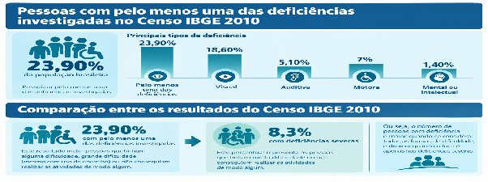
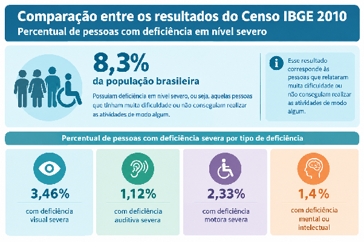
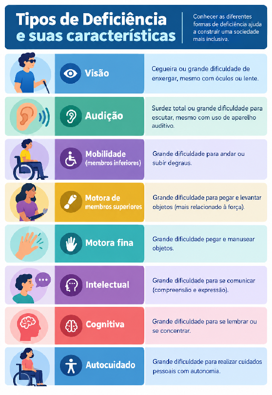
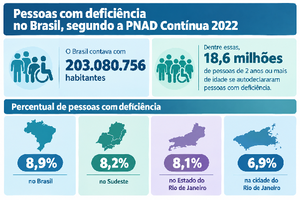
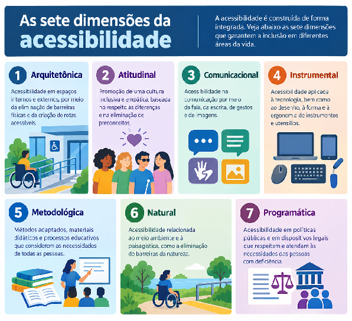
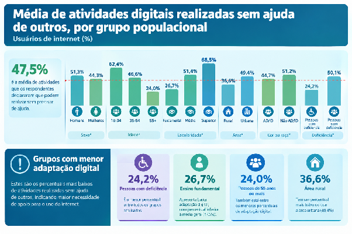

Governo DigitalPrefeitura da Cidade do Rio de Janeiro • Subsecretaria de Transformação Digital e Cidades Inteligentes
Guia de Boas Práticas de Acessibilidade Digital
Diretrizes, critérios técnicos e orientações práticas para a construção e adequação de portais públicos acessíveis, autônomos e inclusivos a todos os cidadãos cariocas.
Ctrl + K
Sugestões Encontradas0
Capítulo 1
Introdução
Em meio a um cenário de avanços tecnológicos e de transformação digital, torna-se urgente a preocupação e o compromisso da gestão pública com a inclusão digital de todos os cidadãos. Sem essa inclusão, a transformação digital torna-se mais uma barreira do que um facilitador. Por outro lado, uma transformação digital focada no ser humano usa a tecnologia para criar uma sociedade mais igualitária, garantindo acesso a serviços essenciais, diminuindo a burocracia, aumentando a eficiência, a transparência e a cidadania ativa.
A implementação da acessibilidade digital promove o acesso igualitário aos conteúdos e serviços públicos, garantindo que os usuários possam navegar com autonomia e compreender com facilidade seu conteúdo. Embora o foco deste guia seja garantir o acesso de pessoas com diversos tipos de deficiência, essa inclusão acaba sendo benéfica para toda a sociedade, pois também impacta outros grupos com baixa adaptação digital, como pessoas idosas ou com baixo nível de escolaridade, por exemplo.
A melhoria da acessibilidade e da usabilidade de portais não impacta negativamente quem não necessita delas, mas representa uma enorme diferença para todos aqueles que, muitas vezes, se vêem impossibilitados de acessar serviços apenas pelo fato de estarem em formato digital.
Visando estabelecer esse compromisso com a população carioca, a Prefeitura da Cidade do Rio de Janeiro, a partir do trabalho da Subsecretaria de Transformação Digital e Cidades Inteligentes, cria o Guia de Boas Práticas de Acessibilidade Digital, que tem como objetivo unir transformação digital e inclusão, trazendo um compilado de diretrizes, critérios práticos e tutoriais que visam orientar Secretarias e demais Órgãos municipais a adequarem seus portais destinados aos cidadãos.
Reconhecemos as dificuldades intrínsecas à empreitada, mas reforçamos que mudanças dependem de engajamento e proatividade, mesmo que ocorram de forma gradual. Olhar para acessibilidade e usabilidade de nossos portais é também enxergar que todo e qualquer cidadão carioca precisa ter seus direitos assegurados e isso precisa ser prioridade para a gestão pública.
Capítulo 2
Compreendendo a acessibilidade
Pessoas com Deficiência: definição
Segundo o Ministério da Saúde brasileiro, “pessoas com deficiência são aquelas que têm impedimento de médio ou longo prazo de natureza física, mental, intelectual ou sensorial, o que, em interação com uma ou mais barreiras, pode obstruir sua participação plena e efetiva na sociedade em igualdade de condições com as demais pessoas”[1].
Ou seja, a deficiência não é somente um atributo de cunho físico-biológico, mas sim o resultado da interação entre as limitações da pessoa e as barreiras do meio onde ela se encontra. Podemos encontrar essas barreiras na arquitetura, nos transportes, nas comunicações, na informação, na tecnologia, além das barreiras atitudinais (preconceitos). Mas com acessibilidade e inclusão, as limitações da pessoa passam a ser apenas uma característica e não um motivo de exclusão.
Tipos de Deficiência
No que se refere à origem da deficiência, o Ministério da Saúde reconhece que ela pode ser congênita (quando a pessoa já nasce com a deficiência) ou adquirida (quando a pessoa passa a ter a deficiência a partir de algum momento da vida, por motivos como doença ou acidente, por exemplo). Ela também pode ser permanente ou temporária, no que diz respeito à duração.
Oficialmente, o Brasil reconhece como tipos de deficiência: a física, visual, auditiva, intelectual e múltiplas (quando a pessoa tem mais de um tipo de deficiência). Ainda assim, o nosso Sistema Único de Saúde também trata como tal, as deficiências invisíveis ou ocultas, como:
(...) fibromialgia, lúpus, esclerose múltipla, endometriose, osteoporose, enxaqueca, surdez, baixa visão, doença de Alzheimer, dificuldades de aprendizado, esquizofrenia, TEA (transtorno do espectro autista), TDAH (transtorno de déficit de atenção e hiperatividade), depressão, TAB (transtorno afetivo bipolar), TAG (transtorno de ansiedade generalizada) e diversas outras[2].
Além dos parâmetros do Ministério da Saúde, existem também os adotados pelo IBGE para realizar o Censo, que é a nossa principal forma de verificar os índices de pessoas com deficiência em todo o território nacional. Mas até mesmo dentro do próprio aferimento do IBGE existem mudanças teórico-metodológicas que precisamos levar em consideração.
No Censo IBGE 2010[3], a metodologia utilizada para verificar se a pessoa entrevistada tinha algum tipo de deficiência já seguia a proposta do Washington Group sobre Estatísticas das Pessoas com Deficiência, a mesma utilizada pela ONU. As perguntas buscavam identificar se a pessoa tinha deficiência visual, auditiva, motora, mental/intelectual ou múltipla. Além do tipo, levava em consideração três níveis de severidade, tendo como referência o grau de dificuldade da pessoa para realizar algumas atividades rotineiras, sendo esses níveis: alguma dificuldade, grande dificuldade (mesmo com uso de algum aparelho) ou não conseguia de jeito algum.
Naquele ano, a população total do Brasil era de 190.755.799 habitantes, e 23,9% da população (45.606.048 pessoas) declarou possuir, pelo menos, uma das deficiências investigadas em algum grau:

🔍 Clique para ampliar
Gráfico e infográfico do Guia de Acessibilidade (image1)
No que se refere às deficiências severas, o percentual caía para 8,3% da população brasileira, representando aquelas pessoas que tinham muita dificuldade ou não conseguiam realizar as atividades de modo algum.

🔍 Clique para ampliar
Gráfico e infográfico do Guia de Acessibilidade (image2)
O levantamento ainda mostrou que existia uma tendência de que mulheres apresentassem maior incidência de casos de deficiência, o que pode ser explicado principalmente pelo envelhecimento da população, somado ao fato das mulheres serem mais longevas que os homens.
Em 2010, a região Sudeste apresentava 23% da população com, pelo menos, um tipo de deficiência, enquanto o Estado do Rio de Janeiro contava com 24,4% da população. No que se refere à cidade do Rio de Janeiro, o Instituto Pereira Passos lançou em junho de 2013, o Cadernos do Rio: Pessoas com deficiência, no qual afirmava que “quase ¼ dos habitantes da Cidade do Rio de Janeiro, ou 24,7% têm algum tipo de deficiência, em qualquer que seja o grau, seja ela física e/ou mental“[4], apresentando um índice acima do nacional e do estadual.
No Censo 2022, vemos um cenário diferente. Embora o IBGE tenha mantido a utilização da metodologia do Washington Group, ela já apresentava mudanças na forma de classificar os tipos de deficiência, abrangendo mais tipos. Além disso, passou a levar em consideração apenas casos graves e permanentes, tirando casos moderados e temporários do cenário.

🔍 Clique para ampliar
Gráfico e infográfico do Guia de Acessibilidade (image3)
Além da mudança metodológica em relação aos tipos e graus de severidade das deficiências, o IBGE também alterou a forma de aplicação das questões. Ele formulou dois tipos de questionários, um estendido, que constavam as perguntas sobre deficiências, e outro básico, que não constava, favorecendo casos de subnotificação. Prova disto é que do Censo de 2010 para o de 2022, houve uma queda considerável do número de pessoas com deficiência. Somente na cidade do Rio de Janeiro, o percentual de pessoas com deficiência caiu de 24,7% para 6,9%.

🔍 Clique para ampliar
Gráfico e infográfico do Guia de Acessibilidade (image4)
A nível nacional, a discrepância entre os censos era de cerca de 30 milhões de pessoas a menos, segundo reportagem do Jornal Folha de São Paulo[5]. Quando questionado, o IBGE afirmou que os números não eram comparáveis devido às mudanças metodológicas. Ainda assim, o caso serve como alerta para a subnotificação de casos que não sejam severos e permanentes, excluindo uma parcela importante da população que também deve ser considerada na hora de pensarmos políticas públicas de acessibilidade.
A atenção a esta parcela da população fica ainda mais evidente quando nos deparamos com o fato de que o envelhecimento está diretamente ligado ao aumento de deficiências. Segundo a PNAD Contínua 2022[6], a partir dos 40 anos de idade, existe um salto significativo no que diz respeito ao aumento de deficiências adquiridas, que se torna ainda maior a partir dos 60 anos.
Isso é especialmente delicado em relação à cidade do Rio de Janeiro, pois ela já é a segunda capital no ranking nacional de envelhecimento populacional[7] (Censo IBGE 2022), perdendo apenas para Porto Alegre. Além disso, atualmente, o Rio de Janeiro é o Estado com menor taxa de fecundidade, o que favorece o envelhecimento populacional. O IBGE prevê que, a partir de 2028, a população do Estado do RJ comece a encolher[8], ficando com mais pessoas acima dos 60 anos do que jovens abaixo dos 14 anos. Isso exige adaptações urgentes em áreas como saúde, assistência social e previdência, mas também novas formas de pensar o urbanismo, a mobilidade urbana, o acesso a serviços, à informação, ao lazer e à cultura. Afinal, toda a população tem direito à cidadania plena.
Desta forma, vemos que garantir os direitos das pessoas com deficiências graves e severas acaba beneficiando uma ampla parcela da sociedade. Pessoas que apresentam deficiências mais brandas ou moderadas, sejam elas permanentes ou não, também precisam contar com uma cidade que esteja preparada para atendê-las. A acessibilidade e a inclusão geram um efeito cascata, impactando positivamente na qualidade de vida, na economia e no desenvolvimento social coletivo.
Direitos das Pessoas com Deficiência
A Convenção sobre os Direitos das Pessoas com Deficiência da ONU (2006) foi o primeiro tratado internacional a reconhecer a importância do respeito à diferença, do direito à autonomia e à liberdade de escolhas da pessoa com deficiência. Ao mesmo tempo, essa convenção ressaltava a urgência da igualdade de oportunidades, visando garantir a efetiva participação e inclusão na sociedade, atuando como um norteador na promoção, formulação e avaliação de políticas, planos, programas e ações em níveis regional, nacional e internacional.
Dois anos depois, em 2008, o Brasil ratificou a Convenção com status de Emenda Constitucional. “Na prática, é como se Constituição Federal tivesse um capítulo inteiro dedicado às pessoas com deficiência. Foi o primeiro tratado internacional recepcionado pelo nosso país nessa condição”.[9]
Em 2015, o Brasil instituiu a Lei Brasileira de Inclusão da Pessoa com Deficiência, também conhecida como Estatuto da Pessoa com Deficiência, “(...) destinada a assegurar e a promover, em condições de igualdade, o exercício dos direitos e das liberdades fundamentais por pessoa com deficiência, visando à sua inclusão social e cidadania”[10].
Dentre os direitos assegurados pela lei estão o direito à vida, à saúde, ao trabalho, à cultura e ao lazer, à mobilidade e também direito de acesso à informação e comunicação, que são essenciais para o exercício pleno da cidadania.
Tipos de Acessibilidade
Para garantir a autonomia das pessoas com deficiência, é imprescindível garantir acessibilidade que, segundo o autor Romeu Kazumi Sassaki, se divide em sete dimensões[11]:

🔍 Clique para ampliar
Gráfico e infográfico do Guia de Acessibilidade (image5)
A Lei Brasileira de Inclusão não trata especificamente dessas dimensões, mas define acessibilidade como:
(...) possibilidade e condição de alcance para utilização, com segurança e autonomia, de espaços, mobiliários, equipamentos urbanos, edificações, transportes, informação e comunicação, inclusive seus sistemas e tecnologias, bem como de outros serviços e instalações abertos ao público, de uso público ou privados de uso coletivo, tanto na zona urbana como na rural, por pessoa com deficiência ou com mobilidade reduzida[12].
Em contrapartida, as barreiras são todos os tipos de impeditivos a essa segurança e autonomia da pessoa com deficiência, podendo ser urbanísticas, arquitetônicas, nos transportes, nas comunicações/informações, na tecnologia e atitudinais. A fim de evitar ao máximo essas barreiras, o governo federal recomenda o uso de desenhos universais[13], ou seja, projetar produtos, serviços e ambientes que possam ser utilizados por todas as pessoas, sem necessidade de adaptação. Mas, caso isso não seja possível, deve-se realizar os ajustes necessários para que todas as pessoas possam usufruir da forma mais equitativa possível.
Acessibilidade Digital: entendendo o conceito
Dentre essas formas de acessibilidade, está prevista a acessibilidade digital, que é a eliminação de barreiras na Web. Ela determina que todo tipo de página web seja projetada de modo que todas as pessoas possam perceber, entender, navegar e interagir de maneira efetiva.
É obrigatória a acessibilidade nos sítios da internet mantidos por empresas com sede ou representação comercial no País ou por órgãos de governo, para uso da pessoa com deficiência, garantindo-lhe acesso às informações disponíveis, conforme as melhores práticas e diretrizes de acessibilidade adotadas internacionalmente.[14]
Embora a lei afirme que também abarca empresas privadas, a acessibilidade digital é ainda mais urgente quando falamos de serviços públicos, pois sua ausência acaba ferindo princípios constitucionais como a igualdade (não discriminação e igualdade de condições), cidadania (pois deixa de ter acesso a direitos fundamentais) e legalidade (não estando em conformidade com Estatuto da Pessoa com Deficiência).
No Brasil, ainda existem barreiras significativas à acessibilidade digital que vão muito além de simplesmente ter ou não acesso à internet. No setor público, algumas situações ganham destaque no entrave à acessibilidade. Primeiramente, a grande quantidade de sistemas legados, que muitas vezes não estão preparados para o uso de tecnologias assistivas.
Já no caso de projetos novos, é muito comum que as equipes tratem a acessibilidade como algo a ser corrigido depois que o site ou aplicativo já está pronto, em vez de considerá-la desde o início do projeto. Essa abordagem torna a correção de problemas estruturais mais difícil e, muitas vezes, mais cara.
Esse cenário é agravado pelo baixo conhecimento técnico sobre o tema, pela pouca participação de pessoas com deficiência no desenvolvimento dos projetos e nos testes com usuários, pelos orçamentos limitados, pela pressão para cumprir prazos de lançamento e pela fiscalização insuficiente no que diz respeito ao cumprimento dos requisitos de acessibilidade. Como resultado, a acessibilidade muitas vezes não é tratada como prioridade, não atuando como um requisito fundamental de qualidade do produto ou serviço digital.
Por outro lado, também temos um quadro de defasagem em relação ao uso de tecnologias por vários grupos, especialmente idosos, pessoas com deficiência, pessoas com baixa escolaridade e de áreas rurais. O que também dificulta o acesso à serviços públicos digitais, fazendo com que a transformação digital de serviços ainda seja uma realidade distante daqueles que mais precisam.
O último levantamento do BID sobre uso de serviços digitais no Brasil[15], publicado em 2025, mostrava que embora cerca 94,2% dos entrevistados possuíssem celular com acesso a dados móveis, alguns grupos (idosos, PCDs, pessoas com baixa escolaridade e de áreas rurais) ainda apresentam uma defasagem de uso e, até mesmo, apresentam percentual de não uso da internet. O principal motivo era a baixa adaptação digital, ou seja, a maioria das pessoas não se sentiam capazes de realizar algumas tarefas sozinhas.
Tentando avaliar o grau de adaptação dos grupos, a pesquisa listava algumas tarefas rotineiras[16], como instalar um aplicativo no celular, fazer uma busca por palavra-chave ou enviar um e-mail com anexo, e perguntava se a pessoa se sentia confiante de realizá-las.
A pesquisa mostrou que a média de entrevistados que demonstrava autoconfiança[17] para realizar atividades digitais sem ajuda de outra pessoa era de apenas 47,5%. “Essa confiança é ainda mais baixa entre pessoas com mais de 55 anos (24,0% das habilidades), indivíduos com ensino fundamental (26,7%), moradores de áreas rurais (36,6%) e pessoas com deficiência (24,2%)”[18].

🔍 Clique para ampliar
Gráfico e infográfico do Guia de Acessibilidade (image6)
A baixa adaptação digital também se refletia diretamente no acesso a serviços públicos digitais. Quando questionados sobre o uso desses serviços no último ano, 42,8% dos entrevistados afirmou ter acessado serviços digitais pelo menos uma vez e os grupos que enfrentaram maior dificuldade de uso foram justamente aqueles que tinham menos adaptação digital.
As três principais alegações eram: a falta de experiência com serviços digitais (15,3%); dúvida sobre a validade do serviço digital (14,9%); e o fato de gostarem de interagir com um funcionário público (9,5%). Além disso, 57,2% afirmou que se voltasse a utilizar o mesmo serviço, iria preferir o atendimento presencial[19].
Tudo isso reforça como ainda existe dificuldade de interação com o mundo digital, por mais que possamos acreditar que ele faz parte do dia a dia da maioria das pessoas. Pensar em acessibilidade digital é, portanto, uma forma de garantir acesso e navegabilidade para grupos que, ainda hoje, se sentem excluídos deste universo, seja por deficiências físicas, intelectuais ou cognitivas, seja pelo baixo letramento, pela idade avançada ou mesmo pelo pouco contato com a tecnologia.
Além disso, uma pesquisa recente da BigDataCorp em parceria com Movimento Web para Todos (WPT)[20], realizada em 2024, analisou sites brasileiros quanto à facilidade de navegação para pessoas com deficiência . Para os testes, escolheu como parâmetros a acessibilidade de imagens, links e formulários, além de verificação de código HTML para conferir se estava de acordo com as especificações da W3C.
Mais de 30 milhões de sites brasileiros, corporativos e privados, foram verificados. Os sites inativos foram desconsiderados nesta pesquisa, restando 26,3 milhões de sites nacionais.
No que se refere aos resultados, apenas 2,42% dos sites tiveram sucesso em relação aos critérios do W3C no código HTML; 16,02% tinham acessibilidade de links; 42,83% possuíam descrição de imagens; e 50,41% possuíam formulários acessíveis.
O resultado mostra que 2,9% dos sites passaram sem erros nas verificações propostas. Isso significa que todas as páginas verificadas neste site passaram nos testes. Um número grande de sites registrou falha em ao menos uma parte dos testes (aproximadamente 97,13%).[21]
O mais impactante da pesquisa é o fato de 89,96% dos sites governamentais não atenderem aos critérios mínimos definidos pela pesquisa, impactando diretamente no exercício da cidadania plena e na garantia de direitos.
Esta pesquisa evidencia a persistência de barreiras que podem comprometer o acesso da população a informações, serviços e direitos fundamentais. A ausência de recursos de acessibilidade pode dificultar ou, em determinados casos, impedir que pessoas com deficiência utilizem serviços públicos digitais de forma autônoma, especialmente quando dependem de tecnologias assistivas para navegar, compreender conteúdos ou realizar procedimentos.
Este cenário também pode afetar pessoas idosas, indivíduos com diferentes níveis de letramento digital e usuários que enfrentam limitações temporárias ou situacionais. Dessa forma, a acessibilidade digital não deve ser compreendida apenas como um requisito técnico de desenvolvimento de sistemas, mas como um componente essencial de inclusão, cidadania e de garantia de acesso equitativo aos serviços públicos.
Quando plataformas governamentais não são acessíveis, a transformação digital pode, paradoxalmente, ampliar desigualdades existentes ao transferir para o cidadão o ônus de superar barreiras que deveriam ser eliminadas pelo próprio serviço.
A acessibilidade digital é, acima de tudo, uma forma de garantir uma navegação mais simples, previsível, objetiva e orgânica, possibilitando um acesso mais amplo e de maior qualidade, visando a autonomia, inclusão e o direito fundamentalà informação, comunicação e acesso à serviços que podem melhorar consideravelmente a qualidade de vida da população.
Capítulo 3
Tipos de deficiência e acessibilidade digital
Deficiência Visual
Principais dificuldades de uso
Imagens, ícones, tabelas, mapas e gráficos sem descrição adequada
Botões, links e campos de formulário sem identificação acessível
Navegação incompatível com leitores de tela
Elementos que dependem exclusivamente de interação visual
Mensagens de erro, alertas e mudanças na tela que não são captados pelo leitor de tela
Boas práticas:
Utilizar HTML semântico e estrutura lógica de títulos, listas e formulários
Fornecer textos alternativos adequados para imagens e outros conteúdos visuais
Garantir compatibilidade com leitores de tela
Permitir a navegação e interação por teclado
Testar o serviço com tecnologias assistivas e com pessoas cegas
2) #### Baixa visão: Redução significativa da capacidade visual, sem possibilidade de melhora mesmo com uso de óculos ou com cirurgia.
Principais dificuldades de uso:
Textos e elementos muito pequenos ou difíceis de ampliar
Baixo contraste entre texto, ícones e fundo
Interfaces não responsivas, que perdem conteúdo ou funcionalidade quando ampliadas
Elementos interativos muito próximos ou difíceis de identificar
Informações apresentadas apenas por características visuais, como tamanho, posição ou contraste
Boas práticas
Garantir contraste adequado entre texto, elementos e fundo
Permitir ampliação do conteúdo sem perda de informação ou quebra de layout
Utilizar tamanhos de texto e elementos interativos adequados
Manter uma organização visual clara, com boa hierarquia e espaçamento
Evitar informações que dependam exclusivamente de características visuais
3) #### Daltonismo: Alteração na percepção das cores devido ao funcionamento ou ausência dos cones da retina, células responsáveis por identificar as cores. O daltonismo pode ser de quatro tipos:
🔍 Clique para ampliar
Gráfico e infográfico do Guia de Acessibilidade (image7)
Principais dificuldades de uso:
Informações transmitidas exclusivamente por meio de cores.
Gráficos e diagramas que diferenciam dados apenas pela cor.
Mensagens de erro ou sucesso identificadas somente por cores.
Links e elementos interativos diferenciados apenas pela mudança de cor.
Combinações de cores com pouco contraste ou difíceis de distinguir.
Boas práticas
Nunca utilizar a cor como único meio de transmitir uma informação.
Combinar cores com textos, ícones, formas ou outros recursos visuais.
Utilizar contraste adequado entre os elementos.
Adotar paletas de cores que considerem diferentes formas de daltonismo.
####
Deficiência Auditiva
1) #### Surdez total ou parcial: Essa condição pode afetar a percepção dos sons e, em diferentes graus, a comunicação oral.
Principais dificuldades de uso:
Vídeos e conteúdos audiovisuais sem legendas.
Informações importantes transmitidas exclusivamente por áudio.
Ausência de tradução ou interpretação em Libras, quando necessária.
Alertas, notificações e mensagens de erro apresentados apenas por sons.
Conteúdos com linguagem complexa ou pouco acessível para pessoas que têm a Libras como primeira língua.
Boas práticas:
Disponibilizar legendas para vídeos e outros conteúdos com informação sonora.
Não depender exclusivamente de sons para transmitir informações importantes, utilizando também recursos visuais.
Disponibilizar Libras quando o contexto e o público justificarem esse recurso.
Fornecer transcrições para conteúdos predominantemente em áudio.
Utilizar linguagem clara e objetiva, com boa organização visual das informações.
Deficiência Intelectual / Cognitiva
No caso de deficiências intelectual e cognitiva, as dificuldades e boas práticas costumam se repetir em cada um dos tipos de deficiência. Para que a lista não ficasse extensa e repetitiva, foram citados pontos diferentes, tentando abarcar o maior número possível de boas práticas e dificuldades.
1) #### Deficiência intelectual: Condição caracterizada por limitações no funcionamento intelectual e nas habilidades adaptativas (como comunicação, aprendizagem, autonomia e interação social).
Principais dificuldades de uso:
Textos longos, complexos ou com linguagem excessivamente técnica.
Interfaces com muitas informações ou elementos apresentados ao mesmo tempo.
Instruções pouco claras ou que exigem muitas etapas para realizar uma tarefa.
Navegação inconsistente, em que os elementos mudam de posição ou comportamento inesperadamente.
Mensagens de erro pouco claras, que não explicam o problema e como resolvê-lo.
Boas práticas:
Utilizar linguagem simples, clara e objetiva
Organizar as informações em pequenas partes, com títulos e hierarquia visual bem definidos.
Apresentar instruções claras e dividir tarefas complexas em etapas menores.
Manter padrões consistentes de navegação, layout e funcionamento dos elementos.
Fornecer mensagens de erro claras, indicando o que aconteceu e como o usuário pode corrigir o problema.
2) #### Transtornodo Espectro Autista (TEA): Condição do neurodesenvolvimento que pode influenciar a comunicação, a interação social, o processamento de informações e a forma como a pessoa percebe e responde ao ambiente.
Principais dificuldades de uso:
Excesso de estímulos visuais
Sons inesperados ou reprodução automática de áudio e vídeo.
Interfaces com mudanças inesperadas de layout, navegação ou funcionamento.
Instruções ambíguas, linguagem figurada ou informações pouco objetivas.
Processos complexos, com muitas etapas ou que exigem respostas rápidas.
Boas práticas:
Evitar animações, movimentos e estímulos visuais desnecessários, oferecendo a possibilidade de interrompê-los.
Não reproduzir áudio ou vídeo automaticamente e permitir o controle sobre sons e animações.
Manter a interface previsível e consistente, evitando mudanças inesperadas.
Utilizar linguagem simples, objetiva e direta, evitando ambiguidades quando elas não forem necessárias.
Permitir que o usuário tenha tempo suficiente para compreender as informações e concluir as tarefas, evitando limites de tempo desnecessários.
3) #### Transtorno do Déficit de Atenção/hiperatividade (TDAH): Caracterizada por padrões persistentes de desatenção, hiperatividade e/ou impulsividade que podem impactar o aprendizado, o trabalho, a organização e as atividades do dia a dia.
Principais dificuldades de uso:
Interfaces com excesso de informações, elementos ou estímulos simultâneos.
Textos longos e pouco estruturados, que dificultam a localização das informações importantes.
Animações, notificações e outros elementos que desviam a atenção durante uma tarefa.
Processos longos, com muitas etapas ou que exigem que o usuário memorize informações.
Limites de tempo muito curtos para concluir tarefas ou preencher formulários.
Boas práticas:
Utilizar interfaces sem poluição visual, organizadas e visualmente hierarquizadas, destacando as informações mais importantes.
Dividir conteúdos extensos em seções menores, utilizando títulos, listas e outros recursos de organização.
Evitar distrações desnecessárias e permitir que animações e notificações sejam desativadas.
Reduzir a necessidade de memorização, fornecendo instruções e informações relevantes no momento em que são necessárias.
Oferecer tempo suficiente para realizar tarefas e, sempre que possível, permitir que o usuário pause ou retome um processo.
4) #### Dislexia: Dislexia é um transtorno específico de aprendizagem com causas de influência genética, neurobiológica e ambiental que interagem ao longo do desenvolvimento.
Principais dificuldades:
Textos longos, densos ou com linguagem excessivamente complexa.
Blocos de texto sem espaçamento ou organização visual adequada.
Fontes pequenas, pouco legíveis ou com pouco contraste.
Interfaces que exigem leitura rápida ou memorização de muitas informações.
Formulários e instruções pouco claros ou que não permitem identificar facilmente as informações principais.
Boas práticas:
Utilizar linguagem simples
Destacar visualmente as informações mais importantes e manter uma hierarquia clara de conteúdo.
Oferecer alternativas ao conteúdo textual, como áudio, vídeos com narração ou recursos de leitura em voz alta
Fonte sem serifa e simples ou fontes exclusivas para dislexia (OpenDyslexic, Dyslexie ou Lexia Readable)
Capítulo 4
Boas práticas de Acessibilidade Digital
Antes de falarmos das diretrizes de acessibilidade, precisamos ressaltar alguns pontos que são essenciais para desenvolver serviços públicos de qualidade. O primeiro deles é ter em vista que a maior parte da população brasileira tem acesso à internet pelo celular, muitas vezes, essa é a única forma de acesso. Por isso, os serviços devem ser desenvolvidos para funcionar adequadamente em diferentes tamanhos de tela, o que reforça a importância do design responsivo e da adoção da estratégia mobile first.
Mobile-first é uma abordagem delineada em 2009 por Luke Wroblewski. De forma simples, o mobile-first é uma abordagem para o design responsivo: primeiro design para telas menores, e depois adicione mais recursos e conteúdo conforme as telas ficam maiores.
Esta abordagem de design também é conhecida como “aprimoramento progressivo”. O movimento inverso, ou “degradação graciosa”, implica projetar para um site totalmente funcional para Desktop, e então adaptar o conteúdo para telas menores a partir daí.[22]
Considerar diferentes dispositivos e formas de acesso, no entanto, é apenas uma das dimensões necessárias para garantir que um serviço digital possa ser utilizado pelo maior número possível de pessoas. É preciso também considerar as diferentes capacidades e necessidades dos usuários durante a navegação e o acesso aos conteúdos.
É neste contexto que entram as Diretrizes de Acessibilidade para Conteúdo Web 2\.2[23], que são o padrão mais atualizado de acessibilidade digital. Essas diretrizes são desenvolvidas pelo World Wide Web Consortium (W3C), em parceria com pessoas e organizações de todo o mundo e estão em conformidade com os modelos anteriores (WCAG 2.0 e WCAG 2.1). O objetivo é estabelecer um padrão comum para tornar o conteúdo da web mais acessível e atender às necessidades de pessoas, organizações e governos.
Em 2005, o Governo Federal brasileiro criou o Modelo de Acessibilidade em Governo Eletrônico (eMAG)[24], tendo como principal objetivo garantir a acessibilidade dos conteúdos e serviços digitais públicos, eliminando ou, pelo menos, reduzindo barreiras que pudessem dificultar o acesso e a utilização por pessoas com deficiência. O eMAG foi baseado no WCAG 1.0, bem como normas e diretrizes de países como EUA, Canadá, Irlanda, Portugal e Espanha. Sua primeira versão, o eMAG 1.4 foi elaborada pelo Departamento de Governo Eletrônico, em parceria com a ONG Acessibilidade Brasil, e disponibilizada para o público em janeiro de 2005\. A versão mais recente do eMAG (Modelo de Acessibilidade em Governo Eletrônico) é a versão 3.1, lançada em abril de 2014\.
Após esta data, não houve nenhum tipo de atualização do eMAG, apenas o lançamento das Normas ABNT 17060[25] e 17225[26], esta última, especificamente para adequação ao WCAG 2.2. Isso não significa que o eMAG 3.1 tenha deixado de ser útil, ele continua sendo uma referência específica para o contexto do governo brasileiro. O problema é que a ausência de uma revisão faz com que ele não acompanhe integralmente a evolução das tecnologias e das necessidades de acessibilidade.
A WCAG 2.2 continua sendo a versão mais completa e atualizada que temos sobre o tema. Devido a isto, foi escolhida para balizar as boas práticas de acessibilidade deste guia. Seus três níveis estabelecem parâmetros de comparação entre os padrões de acessibilidade, sendo eles:
nível A (padrão mínimo): elimina as barreiras de acessibilidade mais críticas, ou seja, sem esses critérios mínimos de acessibilidade, alguns usuários podem ficar impossibilitados de acessar o conteúdo.
nível AA (recomendado): Atende a um conjunto mais amplo de necessidades e reduz significativamente as principais barreiras. É o nível geralmente utilizado como referência para conformidade de sites e serviços digitais.
nível AAA (padrão ideal): Representa o grau mais rigoroso de acessibilidade, incorporando requisitos adicionais. Nem sempre é possível ou adequado atingir AAA para todo o conteúdo.
Além dos níveis, o padrão de acessibilidade da WCAG é estruturado em quatro princípios básicos[27] (conhecidos pela sigla POUR):
Perceptível
Operável
Compreensível
Robusto
Esses princípios se dividem em diretrizes que, por sua vez, se desdobram em critérios de sucesso. As diretrizes têm como objetivo principal garantir que o conteúdo seja acessível ao maior número possível de pessoas e que possa ser apresentado em múltiplos formatos, sendo capaz de se adequar às diferentes capacidades sensoriais, físicas e cognitivas das pessoas. Em cada diretriz, existem critérios de sucesso, que são responsáveis por descrever o que deve ser feito para estar em conformidade com esse padrão de acessibilidade.
A W3C também disponibiliza em seu site: tutoriais, dicas de design acessível, dicas para desenvolvimento, formas de testar e avaliar a acessibilidade, entre outras funcionalidades. Neste sentido, o site também serviu como parâmetro para traçar indicações mais práticas para este guia, complementando as diretrizes gerais e os critérios de sucesso da WCAG.
A partir dessas referências, o guia reúne e organiza boas práticas de acessibilidade digital com o objetivo de oferecer um material prático e orientador para órgãos e secretarias municipais na criação e na revisão de seus portais web, contribuindo para a redução de barreiras de acesso e para uma experiência digital mais autônoma e inclusiva.
Capítulo 5
Apresentação do conteúdo textual
Orientações gerais
Parágrafos
Para que o leitor de tela siga corretamente o fluxo de um parágrafo para o outro, o principal é usar a estrutura semântica correta do HTML. Cada parágrafo deve estar dentro de uma tag \.
Não é recomendado utilizar a tag \, porque semanticamente é um único parágrafo com várias quebras de linha.
Também não é recomendado fazer nenhum indicativo de próximo parágrafo. Caso o parágrafo seguinte estiver com a tag \, o leitor de tela fará a leitura normalmente.
Além disso, se houver títulos, listas, tabelas, imagens e outros elementos, mantenha a hierarquia semântica com a indicação das tags correspondentes.
Tamanho de fonte e redimensionamento de texto
A WCAG não determina um tamanho de fonte, no entanto, boas práticas de design indicam o tamanho 16 como o mínimo. Além disso, a questão do redimensionamento torna-se essencial para garantir a legibilidade.
O texto (exceto legenda ou imagem de texto) deve poder ser redimensionado 200%, sem apresentar perda de conteúdo ou de funcionalidade.
Alinhamento de texto
A largura do bloco de texto não tem mais do que 80 caracteres ou glifos (40 se CJK)
O bloco de texto não deve ser justificado (alinhado a ambas as margens esquerda e direita).
Para idiomas que são lidos da esquerda para a direita, o alinhamento deve ser à esquerda, como é o caso do português.
Para idiomas que são lidos da direita para a esquerda, o alinhamento deve ser à direita.
Realinhamento e rolagem de tela
O conteúdo pode ser apresentado sem perda de informação ou funcionalidade e sem exigir rolagem em duas dimensões para:
Conteúdo de rolagem vertical com largura equivalente a 320 pixels CSS;
Conteúdo de rolagem horizontal com altura equivalente a 256 pixels CSS.
Exceto para partes do conteúdo que requerem layout bidimensional para uso ou significado.
320 pixels CSS equivalem a uma largura de janela de exibição (viewport) inicial de 1.280 pixels de largura, com zoom de 400%.
Para conteúdo da Web projetado para rolar horizontalmente (por exemplo, com texto vertical), os 256 pixels CSS equivalem a uma altura inicial da janela de exibição de 1024px com zoom de 400%.
Exemplos de conteúdo que exigem layout bidimensional são imagens necessárias para compreensão (como mapas e diagramas), vídeos, jogos, apresentações, tabelas de dados (não células individuais) e interfaces onde seja necessário manter as barras de ferramentas em exibição ao manipular o conteúdo. É aceitável fornecer rolagem bidimensional para tais partes do conteúdo.
Espaçamento de texto
Os espaçamentos devem ser calculados levando em consideração o tamanho da fonte do texto. O layout do site deve suportar esses ajustes sem quebrar.
Espaçamento entre linhas de pelo menos 1,5 vezes o tamanho da fonte;
Espaçamento entre os parágrafos subsequentes de pelo menos 2 vezes o tamanho da fonte;
Espaçamento entre letras de pelo menos 0,12 vezes o tamanho da fonte;
Espaçamento entre palavras de pelo menos 0,16 vezes o tamanho da fonte.
Contraste textual
Para o nível AA, o contraste textual e de imagens de texto é, no mínimo, 4.5:1. Para o texto ampliado ou imagem de texto grande, o contraste mínimo é de 3:1.
Para checar o contraste das páginas, sugerimos a utilização de ferramentas como:
Textos ou imagens que são meramente decorativos não possuem requisitos mínimos de contraste.
Logotipos não possuem requisitos mínimos de contraste.
Contraste não textual
Para o nível AA, o contraste mínimo entre componentes de interface ou objetos gráficos e cores adjacentes deve ser de 3:1.
Como exemplo temos mudanças de estado (grifos ao passar o mouse, clicar no botão, etc) ou qualquer tipo de informação gráfica.
Uso de cores
A cor não pode ser utilizada como o único meio visual de transmitir informações, indica uma ação, pedir uma resposta ou distinguir um elemento visual.
Nestes casos, ela precisa vir acompanhada de uma indicação textual.
Indicação de link
Links como “saiba mais”, “clique aqui” ou “leia mais” não conseguem indicar para uma pessoa com deficiência visual o assunto tratado. O ideal é que o próprio título do documento, artigo ou site seja o link.
Ex.: Fornecer um texto de link que descreva a finalidade de um link
Para um título que também é um link, o ideal é usar um elemento \ envolvendo o título no código HTML. O leitor de tela será capaz de perceber que se trata de um link.
Formulários
Além das considerações técnicas, os usuários geralmente preferem formulários simples e curtos. Solicite apenas o necessário para concluir a transação ou o processo; se forem solicitados dados irrelevantes ou excessivos, é mais provável que os usuários abandonem o formulário.
Controles de rotulagem:
use o \ elemento
em casos específicos, outros mecanismos como o WAI-ARIA[28], para identificar cada controle do formulário.
Agrupamento de controles: use os \elementos \\\\ e \\\ para agrupar e associar controles de formulário relacionados.
Instruções: forneça instruções para ajudar os usuários a entender como preencher o formulário e os controles individuais do formulário.
Validação: valide os dados fornecidos pelo usuário e ofereça opções para desfazer alterações e confirmar a entrada de dados.
Notificações: notifique os usuários sobre a conclusão bem-sucedida de tarefas, quaisquer erros e forneça instruções para ajudá-los a corrigir os erros.
Formulários longos: divida formulários longos em vários formulários menores que constituem uma série de etapas ou fases lógicas e informem os usuários sobre seu progresso.
Controles personalizados: utilize elementos de formulário estilizados e outras técnicas de aprimoramento progressivo para fornecer controles personalizados.
Listas
Existem vários tipos de lista:
Listas não ordenadas: usadas quando a ordem dos itens não é relevante.
A lista não ordenada consiste em um \elemento e múltiplos itens de lista ( \):
Listas ordenadas: são usadas para informações sequenciais e enumeradas automaticamente pelo navegador.
A lista ordenada consiste em um \elemento e vários itens de lista ( \)
Listas de descrição: são grupos de termos e descrições conectados programaticamente.
Uma lista de descrição consiste em um ou mais agrupamentos de termos e descrições. Cada agrupamento associa um ou mais termos (o conteúdo dos \elementos) a uma ou mais descrições (o conteúdo dos \elementos).
Um agrupamento começa no primeiro item da lista ou sempre que um \elemento segue outro \elemento.
IMPORTANTE: “Cada leitor de tela exibe \o conteúdo de forma diferente, incluindo a contagem total, o contexto de termos/definições e os métodos de navegação. Essas diferenças não são necessariamente bugs. A partir do iOS 14, o VoiceOver anunciará que \o conteúdo é uma lista ao navegar com o cursor virtual (não pelo comando "ler tudo"). O VoiceOver não oferece suporte a comandos de navegação em listas com \\\ \. Tenha cuidado ao aplicar ARIA terme definition funções a \construções, pois o VoiceOver (macOS e iOS) ajustará a forma como elas são anunciadas.”[29]
Os itens individuais de uma lista podem conter uma variedade de elementos HTML, incluindo parágrafos, títulos, elementos de formulário e outras listas (aninhadas).
###
Capítulo 6
Apresentação do conteúdo imagético
Orientações gerais:
Imagens e gráficos tornam o conteúdo mais agradável e, até mesmo, mais fácil de entender, principalmente para aquelas com baixo letramento ou dificuldades cognitivas. No entanto, é imprescindível que elas venham acompanhadas de acessibilidade, para que não se tornem barreiras para outros grupos, como pessoas com deficiência visual.
Imagens informativas
Imagens que representam graficamente conceitos e informações, geralmente figuras, fotos e ilustrações.
Para que um leitor de tela consiga transmitir a informação da imagem, ela precisa estar descrita no “alt”.
Não há limite oficial, mas 100–150 caracteres são suficientes para a maioria dos casos.
Caso haja necessidade de mais, considere um longdesc ou descrição expandida no texto da página.
Exemplo de descrição de imagem:
Incorreta:
```html
```
Correta:
```html
```
Imagens decorativas
É aquela que tem como único objetivo adicionar decoração visual à página, em vez de transmitir informações.
O ideal é que os leitores de tela ignorem esse tipo de imagem, porque ele não contém nenhum conteúdo.
Deve-se deixar o conteúdo do atributo "alt" vazio (alt=””), para que a imagem seja ignorada pelos leitores de tela.
Imagens funcionais
O texto que acompanha uma imagem usada como link ou botão deve descrever a funcionalidade do link ou botão, não a imagem em si.
Ex.: imagem com ícone de impressora deve representar a função de impressão.
Imagens com texto
Não é recomendado que uma imagem contenha um texto dentro dela, porque leitores de tela não conseguem interpretar textos que estão em formato de imagem.
Caso isso ocorra, ele deve ser descrito na íntegra para que seja possível ser captado pelo leitor de tela.
Não coloque muito texto em suas imagens. O ideal é que a imagem complemente a informação.
É essencial utilizar texto em HTML e CSS para evitar distorções ao redimensionar as telas.
Imagens complexas
No caso de gráficos e imagens complexas, precisamos fornecer uma descrição mais detalhada.
A solução é fornecer as informações do gráfico no próprio contexto antes ou depois da imagem ou então em um link logo após a imagem.
Grupos de imagens
Se várias imagens transmitem uma única informação, o texto alternativo para uma imagem deve transmitir a informação para todo o grupo.
Mapas de imagem
Um mapa de imagem é uma imagem dividida em áreas selecionáveis. Cada área é um link para outra página ou para outra parte da mesma página.
O texto alternativo para uma imagem que contém várias áreas clicáveis deve fornecer um contexto geral para o conjunto de links.
Cada área clicável individualmente deve ter um texto alternativo que descreva a finalidade ou o destino do link.
Tabelas
Tabelas acessíveis precisam de marcação HTML que indique as células de cabeçalho e as células de dados, definindo sua relação. Tecnologias assistivas usam essas informações para fornecer contexto aos usuários.
As células de cabeçalho devem ser marcadas com \\\href\
As células de dados com \\dref\ \
Para tabelas mais complexas, associações explícitas podem ser necessárias usando atributos como scope\ id\href\, \\dref\ e \\dref\ headers.
Apresentação do conteúdo em vídeo:
Orientações gerais
Além do conteúdo textual, deve ser fornecida uma alternativa em mídia aos que se beneficiam de representações alternativas a texto, que podem ser áudio, vídeo (incluindo vídeo em língua de sinais) ou áudio e vídeo juntos.
Uso de legendas
Legenda pré-gravada: devem ser fornecidas legendas para todo conteúdo de áudio pré-gravado em mídia sincronizada.
Legendas geradas automaticamente não costumam atender às necessidades do usuário, nem aos requisitos de acessibilidade. Geralmente, elas precisam de edições significativas.
O formato mais comum para legendas na web é o The Web Video Text Tracks Format (WebVTT).
Caso não seja possível, deve ser oferecida uma alternativa em texto, contendo as mesmas informações do áudio pré-gravado.
Esta alternativa pode estar disponível em arquivo para download ou link.
Identifique os oradores, indique sons não verbais, inclua informações importantes sobre o discurso.
Legenda ao vivo: devem ser fornecidas legendas para todo conteúdo de áudio ao vivo em mídia sincronizada.
Audiodescrição estendida: quando as pausas no áudio de primeiro plano forem insuficientes para permitir que as audiodescrições transmitam o sentido do vídeo, é fornecida uma audiodescrição estendida para todo o vídeopré-gravado no conteúdo em mídia sincronizada.
Mídia alternativa
Deve ser oferecida uma alternativa para mídia com base em tempo para todo o conteúdo em mídia sincronizada pré-gravada e em mídia de apenas vídeo pré-gravado.
Como alternativa para mídia com base em tempo, entende-se: documento que inclui descrições em texto, corretamente sequenciadas, de informações visuais e auditivas baseadas em tempo.
Além das informações contidas nas falas, é preciso informar todo o conteúdo visual relevante para a compreensão do vídeo, como expressões corporais, risadas, informações em texto, mudança de ambiente, etc.
Língua de sinais
Deve ser oferecida alternativa em língua de sinais para todo conteúdo de áudio pré-gravado em mídia sincronizada.
O plugin de LIBRAS não substitui a tradução humana.
A LIBRAS não está somente ligada à língua falada do país, mas também possui regionalidades, portanto é preferível um tradutor que acompanhe essas regionalidades.
Geralmente, é melhor que o fundo e as roupas de quem está traduzindo sejam de cores sólidas que contrastem com o tom de pele. Além disso, é necessário gravar o intérprete com uma boa iluminação, a fim de garantir uma boa visibilidade.
Na hora da gravação, certifique-se que a imagem captura a linha abaixo da cintura até acima da cabeça, bem laterais até cada um dos cotovelos.
Os espectadores precisam conseguir ver claramente todos os movimentos e expressões faciais.
Posicione o intérprete de língua de sinais de forma a evitar que informações importantes no vídeo sejam obscurecidas. Geralmente, ele fica no canto inferior direito, mas se o vídeo contiver informações na parte inferior, posicione o intérprete acima dele.
###
Capítulo 7
Estrutura da página
Orientações gerais:
Uma página web bem estruturada facilita o acesso e a navegação para todos, especialmente para pessoas com deficiências cognitivas, visuais ou que utilizam leitores de tela, teclado e outros recursos de acessibilidade. Uma estrutura clara também melhora a navegação em dispositivos móveis, permite acessar diretamente diferentes seções da página e ajuda os mecanismos de busca a compreender e indexar melhor o conteúdo.
Cabeçalhos
A maioria dos sites possui uma área no topo de cada página que contém informações gerais do site, como o logotipo, a função de busca e as opções de navegação.
A interface deve seguir a estrutura hierárquica correta.
Os cabeçalhos (títulos) em HTML são representados pelas tags \ até \, informando ao navegador que trata-se de um cabeçalho ("h" vem do inglês "heading", que significa cabeçalho).
O "h1" deve ser o título principal da página, ou seja, deverá existir apenas um elemento "h1" em cada página.
Em seguida, devem ser utilizados os níveis subsequentes de título, de maneira hierárquica, sem se pular um ou mais níveis.
Rodapé
Assim como o cabeçalho da página, a maioria dos sites também possui uma região na parte inferior de cada página que contém informações gerais do site, como informações sobre direitos autorais, declarações de privacidade ou isenções de responsabilidade.
O HTML5 fornece o \elemento \\\, que pode ser usado para definir essa região.
Se o \elemento for usado dentro \de \outros elementos, ele não será associado a esses elementos. Ele não receberá a contentinfo função WAI-ARIA e não terá comportamento especial em tecnologias assistivas.
Conteúdo principal
Utilize o \elemento HTML5 para identificar a região de conteúdo principal de uma página web ou aplicação.
Conteúdo complementar
Utilize o \ elemento HTML5 para identificar regiões que complementam o conteúdo principal, mas que constituem seções separadas e significativas por si só.
Ex.: uma nota lateral explicando ou comentando o conteúdo principal.
Dê preferência a estruturas de menu em lista. Essas informações estruturais permitem que as tecnologias assistivas anunciem o número de itens no menu e forneçam a funcionalidade de navegação correspondente.
Identifique o menu, idealmente usando o \elemento HTML5 para permitir que os usuários acessem o menu diretamente.
Utilize formatação para indicar o item atual de um menu, como a página atual em um site, para melhorar a orientação no menu.
A estrutura do menu deve ser consistente em todos os tamanhos de tela. Alguns itens do menu podem estar recolhidos ou até mesmo ocultos em submenus de navegação, mas os itens que forem exibidos devem aparecer na mesma ordem, com a mesma descrição e destino.
Carrossel
Os carrosséis são frequentemente usados como galerias para exibir uma série de imagens. No entanto, conteúdos mais complexos, como teasers, artigos ou seções inteiras de páginas da web, também podem ser exibidos em carrosséis.
Em todos os casos, utilize a marcação apropriada para garantir que a estrutura e o significado do conteúdo sejam transmitidos com clareza.
Como uma coleção de itens de conteúdo, os carrosséis são geralmente melhor representados como listas não ordenadas, usando \\\ \e \\\ \. Dependendo do contexto, outros elementos também podem ser usados, como marcação de títulos, seções, listas, artigos e outros elementos, conforme necessário.
Capítulo 8
Navegabilidade da interface
Orientações gerais:
Navegação por teclado
Toda a funcionalidade do conteúdo deve ser operável através teclado sem exigir o pressionamento de teclas individuais em tempos específicos, exceto quando a função subjacente requer entrada de dados que dependa do caminho do movimento do usuário e não apenas dos pontos finais.
Um usuário que navega somente pelo teclado deve conseguir entrar e sair de qualquer componente ou funcionalidade usando o teclado, sem ficar permanentemente preso em algum elemento.
Para que a navegação por teclado funcione da melhor forma possível, seja para pessoas com deficiência física ou visual (com uso de leitor de tela), é de suma importância que se respeite a hierarquia do conteúdo e se faça as indicações corretas de tag no código HTML.
Tempo de navegação ajustável
Em caso de navegação com limite de tempo, deve-se oferecer uma das opções:
Desligar: o usuário pode desligar o limite de tempo antes de atingi-lo;
Ajustar: o usuário pode ajustar o limite de tempo antes de atingi-lo em um amplo intervalo (de, pelo menos, dez vezes maior que a duração da configuração padrão); ou
Prolongar: o usuário é avisado antes de o tempo expirar e tem, no mínimo, 20 segundos para prolongar o limite de tempo com uma simples ação.
As exceções ao ajuste de tempo são:
O limite de tempo é uma parte necessária de um evento em tempo real (por exemplo, um leilão), e não é possível nenhuma alternativa ao limite de tempo;
O limite de tempo é essencial e prolongá-lo invalidaria a atividade;
O limite de tempo é superior a 20 horas.
Controlar movimento de informações ou animações
Para qualquer informação que se mova, pisque ou role e que sejam iniciadas automaticamente, durem mais de cinco segundos e sejam apresentadas em paralelo com outro conteúdo, deve haver um mecanismo que permita ao usuário pausar ou ocultar, a menos que o movimento, o piscar ou a rolagem façam parte de uma atividade em que isso seja essencial.
O mesmo se aplica para qualquer animação, a menos que seja essencial para a funcionalidade ou para as informações que estão sendo transmitidas.
Capítulo 9
Outras dicas de design
Navegação clara e consistente
Garanta que a navegação entre as páginas de um site tenha nomes, estilos e posicionamento consistentes.
Ofereça mais de um método de navegação, como uma busca no site ou um mapa do site.
Ajude os usuários a entenderem onde estão no site ou na página, fornecendo dicas de orientação, como trilhas de navegação (breadcrumbs) e títulos claros.
Feedback facilmente identificável
Forneça feedback para interações, como confirmar o envio de um formulário, alertar o usuário quando algo der errado ou notificá-lo sobre alterações na página.
As instruções devem ser fáceis de identificar.
Feedbacks importantes que exigem ação do usuário devem ser apresentados de forma destacada.
Design para diferentes tamanhos de viewport
Considere como as informações da página são apresentadas em telas de diferentes tamanhos, como celulares ou janelas de navegador com zoom.
A posição e a apresentação dos elementos principais, como cabeçalho e navegação, podem ser alteradas para melhor aproveitamento do espaço.
Certifique-se de que o tamanho do texto e a largura da linha estejam configurados para maximizar a legibilidade.
O design deve ser responsivo para atender às diretrizes de redimensionamento (200% de zoom), garantindo que elementos como botões, campos de formulário e textos ampliados não fiquem sobrepostos ou cortados.
SETA, Renata. Deficiências invisíveis, deficiências ocultas, neurodivergências e doenças raras: fundamental falar sobre isso\! Faculdade de Educação – UNICAMP, 10 jul. 2024\. Disponível em: \<\\>\>. Acesso em: ↩
Cartilha do Censo 2010: pessoas com deficiência. Brasília, DF: Secretaria de Direitos Humanos da Presidência da República; Secretaria Nacional de Promoção dos Direitos da Pessoa com Deficiência, 2012\. Disponível em: \<\\>\>. Acesso em: ↩
RIO DE JANEIRO (Município). Instituto Pereira Passos.Cadernos do Rio: pessoas com deficiência. Rio de Janeiro: Instituto Pereira Passos, jun. 2013, p. 9\. Disponível em: \<\\>\>. Acesso em: ↩
FERRAZ, Carolina Valença. O desaparecimento das pessoas com deficiência; ou a balada do capacitismo estrutural. Folha de S.Paulo, São Paulo, 25 jul. 2025\. Opinião. Disponível em: \<\\>\>. Acesso em: ↩
BRASIL. Lei nº 13.146, de 6 de julho de 2015\. Institui a Lei Brasileira de Inclusão da Pessoa com Deficiência (Estatuto da Pessoa com Deficiência). Brasília, DF: Presidência da República, 2015\. Disponível em: \<\<https\://www\.planalto.gov.br/ccivil\_03/\_ato2015-2018/2015/lei/l13146.htm\>\>. Acesso em: ↩
Op. Cit.,BRASIL. Lei nº 13.146/ 2015, art. 3º, I. ↩
Como desenhos universais entende-se a concepção de produtos, ambientes, programas e serviços a serem usados por todas as pessoas, sem necessidade de adaptação ou de projeto específico, incluindo os recursos de tecnologia assistiva. BRASIL. Lei nº 13.146/ 2015, art. 3º, II. ↩
Op. Cit., BRASIL. Lei nº 13.146/ 2015, art. 63\. ↩
BERGUES, Martina; LAFUENTE, Mariano.Uso de serviços digitais: um retrato do Brasil. Washington, D.C.: Banco Interamericano de Desenvolvimento, 2025\. Disponível em: \<\\>\>. Acesso em: ↩
WORLD WIDE WEB CONSORTIUM (W3C). Diretrizes de Acessibilidade para Conteúdo Web (WCAG) 2.2. W3C Recommendation, 5 out. 2023\. Disponível em: \<\. Acesso em: ↩
BRASIL. Modelo de Acessibilidade em Governo Eletrônico (eMAG): versão 3.1. Brasília, DF: Ministério do Planejamento, Orçamento e Gestão, 2014\. Disponível em: \<\\>\>. Acesso em: ↩
ASSOCIAÇÃO BRASILEIRA DE NORMAS TÉCNICAS. ABNT NBR 17060:2022: acessibilidade em aplicativos de dispositivos móveis — requisitos. Rio de Janeiro: ABNT, 2022\. ↩
ASSOCIAÇÃO BRASILEIRA DE NORMAS TÉCNICAS. ABNT NBR 17225:2025: acessibilidade em conteúdo e aplicações web — requisitos. Rio de Janeiro: ABNT, 2025\. ↩
WORLD WIDE WEB CONSORTIUM (W3C).Introduction to Understanding WCAG 2.2. W3C Web Accessibility Initiative, 15 jul. 2025\. Disponível em: \<\\>\>. Acesso em: ↩